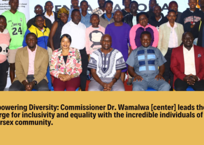

“Baby Boy or Girl?” — Citizen Reports on the Stigma Facing Intersex Persons

Baby boy or girl? When the gender question goes unanswered, it often goes undocumented in birth certificates. In this Citizen feature, reporter Christine Njeru examines the stigma that continues to surround intersex persons in Kenya — people born with natural variations in sex characteristics who still face discrimination, rejection and exclusion simply because of how they were born.
Wenye tofauti za kimaumbile wanaendelea kukabiliana na changamoto mbalimbali katika jamii. Wengi wakikumbana na unyanyapaa, ubaguzi na kutengwa kutokana na hali yao ya kuzaliwa — tatizo kubwa likiwa jamii haielewi wala kukubali kabisa watu wanaozaliwa na jinsia hii.
Listen to the report
Why it matters
For many intersex children, the uncertainty begins at birth. When the question of sex cannot be answered immediately, registration is often delayed or never completed — leaving a child without a birth certificate, and later without the national documents that unlock school, healthcare, and every other right that depends on being formally recognised. The deeper barrier, the report notes, is a society that does not yet understand or fully accept people born with these natural variations.
This is the reality that has driven Kenya's reforms toward recognition and inclusion — from the counting of intersex persons in the 2019 national census, to progress on civil registration, to the ongoing Intersex Persons Bill. As Commissioner Dr. Dennis Wamalwa has consistently affirmed, intersex rights are human rights, and recognition under the law is the first step toward dignity.
Watch / read the full report on Citizen
Report and audio courtesy of Citizen · Reporter: Christine Njeru. Shared here for awareness; all rights remain with the original broadcaster.